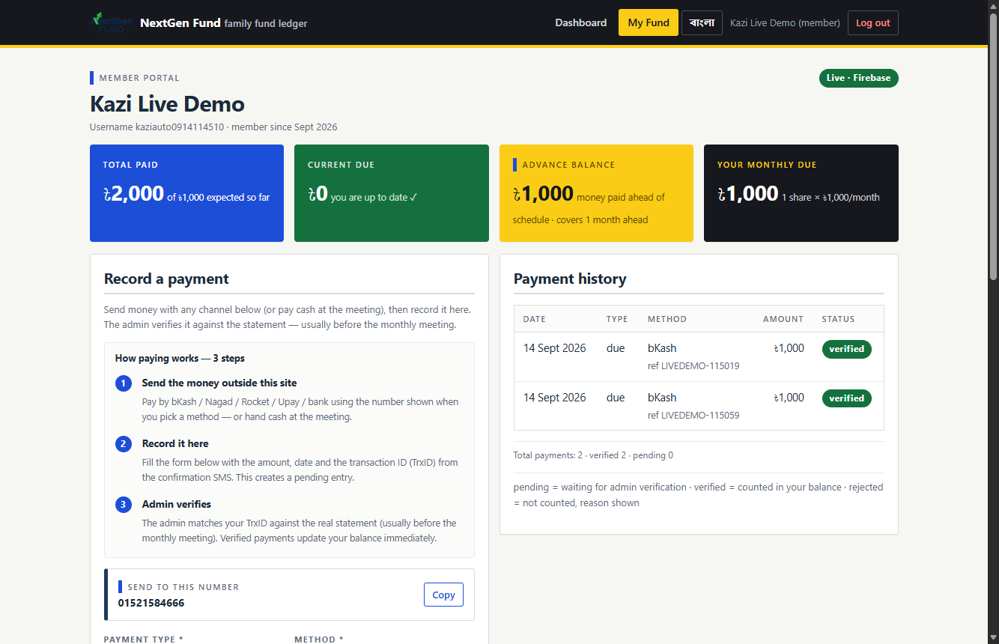

Advance (অগ্রিম) ব্যালেন্স সবসময় ৳০ দেখানোর কারণ ও সমাধান
সেপ্টেম্বরে যোগ দেওয়া সদস্য মাসিক ৳১,০০০ বিলের বিপরীতে ৳২,০০০ জমা দিলে অগ্রিম ৳১,০০০ দেখানোর কথা — কিন্তু পোর্টালে ৳০ দেখাচ্ছিল। মূল কারণ পেমেন্ট-পোস্টিং লজিকের একটি ক্ল্যাম্প; কোনো ডেটা হারায়নি, কোনো মাইগ্রেশন লাগেনি। হিসাবের নিয়ম বদলে দেওয়ার পর একই অ্যাকাউন্ট লাইভেই সঠিক মান দেখাচ্ছে।
01এক নজরে
02মূল কারণ (Root cause)
ব্যালেন্স কোথাও “সংরক্ষিত” নয় — প্রতিবার পেমেন্ট লেজার থেকে computeBalance() চালিয়ে হিসাব হয়। পুরোনো কোডে দুটি আলাদা বালতি ছিল:
// আগে — assets/js/store.js:145-152 এবং assets/js/firebase-adapter.js:113-120 if (p.status === 'verified') { if (p.type === 'due') paidDue += amt; if (p.type === 'advance') advance += amt; // শুধু "advance" ধরনের পেমেন্টই অগ্রিম } ... due: Math.max(0, expected - paidDue - pendingDue), // বিলের বেশি টাকা এখানে ০-তে ক্ল্যাম্প হয়ে হারিয়ে যায় advance: advance // due-payment-এর উদ্বৃত্ত কখনো এখানে আসে না
type: "due" হিসেবে জমা হয় → paidDue = 2,000।
expected = 1,000। তাই due = max(0, 1,000 − 2,000) = 0 — ঠিক আছে।
কিন্তু advance শুধু type === "advance" থেকে আসত, আর কোনো এমন পেমেন্ট ছিল না → advance = 0।
ফলে ৳1,000 কোনো কার্ডেই দেখা যেত না। লেজারে টাকা ছিল (দুটি verified রো), শুধু হিসাবের বালতিতে ঠিকানা পেত না।
| স্তর | কী পাওয়া গেল |
|---|---|
| ডেটাবেস (লেজার) | payments/LIVEDEMO-115019, payments/LIVEDEMO-115059 — প্রতিটি amount:1000, type:"due", status:"verified" |
| পোস্টিং লজিক | store.js:145-152 · firebase-adapter.js:113-120 — verified due যোগ হতো paidDue-তে |
| ফিল্ড ম্যাপিং | advance কেবল type:"advance" ইনপুট থেকে; surrogate/উদ্বৃত্ত গণনা ছিল না |
| UI | portal.js:29 set('bal-advance', b.advance) — যেহেতু মান ০, কার্ডে ৳0 |
03চূড়ান্ত নিয়ম (locked spec)
একটি বাক্যেই: প্রতিটি verified টাকা = ফান্ডে আসা টাকা; এখন পর্যন্ত বিলের বেশি অংশ = অগ্রিম। কোনো সঞ্চিত “advance” ফিল্ড নেই — তাই পুরোনো ডেটাও নিজে থেকে ঠিক হয়।
| প্রশ্ন | উত্তর |
|---|---|
| জন্ম | বিলের বেশি due পেমেন্ট বা সরাসরি advance পেমেন্ট |
| খরচ | নতুন মাস বিল হলে অটো — আগে অগ্রিম, পরে বাকি |
| বহন | হ্যাঁ, খরচ না হওয়া পর্যন্ত বহন করে |
| আংশিক | যতটা এসেছে ততটাই কাটে; কখনো ঋণাত্মক নয় |
| pending | due কমায়, কিন্তু verify হওয়ার আগে advance হয় না |
| reject/refund | verified বাদ গেলে আবার হিসাব; ঋণাত্মক হয় না |
| ধাপ | expected | paid | due | advance |
|---|---|---|---|---|
| সেপ্টেম্বরে যোগ (১ শেয়ার) | 1,000 | 0 | 1,000 | 0 |
| ১ম ৳1,000 verified | 1,000 | 1,000 | 0 | 0 |
| ২য় ৳1,000 verified | 1,000 | 2,000 | 0 | 1,000 |
| অক্টোবরের বিল | 2,000 | 2,000 | 0 | 0 |
| নভেম্বরের বিল | 3,000 | 2,000 | 1,000 | 0 |
04পরীক্ষা — কেস ও ওরের ফলাফল
| ID | যা পরীক্ষা করা হলো | ফল |
|---|---|---|
| R1 | পুরোনো ফর্মুলা verbatim চালিয়ে বাগ পুনরুৎপাদন — ৳2,000 জমা, advance ৳0 | PASS |
| R2 | ফিক্সের পর advance = ৳1,000 (বিলের উদ্বৃত্ত) | PASS |
| R3 | due ৳0 এবং paid ৳2,000 অপরিবর্তিত | PASS |
| R4 | advanceMonths = 1 (কত মাস আগাম) | PASS |
| R5–R6 | invariant + রিলোডের পর একই মান (persisted) | PASS |
| R7–R8 | লেজার থেকে অগ্রিম পুনর্গঠন; মোট জমা = প্রয়োগ + অগ্রিম | PASS |
| B1 | মাস পরিবর্তনে অগ্রিম খরচ (অক্টোবরে expected ৳2,000) | PASS |
| B2–B3 | দুই মাস বাকি থাকলে প্রকৃত due ফিরে আসে; এক মাস দিলে ঠিক ততটাই কমে | PASS |
| B3b | ০ টাকা / ১,০০০-এর গুণিতক নয় — এখনও reject | PASS |
| B4–B5 | pending টাকা due কমায় কিন্তু verified advance বানায় না; উদ্বৃত্ত pendingAdvance-এ | PASS |
| B6 | reject/refund পথ — কোনো বালতি ঋণাত্মক হয় না | PASS |
| B7–B8 | সরাসরি advance পেমেন্ট received হিসেবে গণ্য; invariant ধরে | PASS |
| B9–B10 | মাসের শেষে যোগ, ৩ শেয়ার (৳3,000 বিল) → ৳5,000 দিলে ৳2,000 অগ্রিম | PASS |
| B11 | ফান্ডের সব সদস্য (১৬ জন) — কোনো ঋণাত্মক/অসঙ্গত বালতি নেই | PASS |
| B12 | ফান্ড snapshot-এ memberAdvance পুল প্রকাশ | PASS |
| ধাপ | যা প্রমাণিত | ফল |
|---|---|---|
| E2E-5 | verify করার পর fund totals স্বয়ংক্রিয় (totalFunding/memberDeposits ৳1,000) | PASS |
| E2E-5b | অতিরিক্ত ৳1,000 জমা → advance ৳1,000, advanceMonths 1, memberAdvance ৳1,000 | PASS |
| E2E-7 | সদস্য নিজে verify/settings/finance/approve করতে পারে না (rules) | PASS |
| রিগ্রেশন | store 60 · access 12 · isolation 14 · fixes 22 · advance 32 = ১৪০ চেক | ALL PASS |
| মোট | উপরের ৩৫টি E2E + ১৪০টি লোকাল = ১৭৫টি যাচাই | ALL PASS |
05আক্রান্ত অ্যাকাউন্ট ও সংশোধন
| একাউন্ট | join | monthly | এখন পর্যন্ত বিল | জমা | advance (আগে) | advance (পরে) |
|---|---|---|---|---|---|---|
| kaziauto0914114510 (“Kazi Live Demo”) | 2026-09 | 1,000 | 1,000 | 2,000 | 0 | 1,000 |
অ্যাডমিন প্যানেলের Members ট্যাবে নতুন Advance audit কার্ড কারা অগ্রিম ধরে আছে ও কে বিলের বেশি পরিশোধ করেছে তা এক নজরে দেখায়; Export CSV-তে প্রতিটি সদস্যের অগ্রিম কলাম থাকে — সব সক্রিয় অ্যাকাউন্ট একসাথে যাচাই করা যায়।
06আগে / পরে প্রমাণ (একই অ্যাকাউন্ট, লাইভ)


08স্বাধীন রিভিউ — ২ এজেন্ট, ৭টি সমস্যা ধরা, সব ঠিক
ফিক্স শেষে দুটি স্বতন্ত্র এজেন্ট নিয়োগ করা হয়েছিল: একজনের কাজ ছিল লজিক ভেঙে ফেলার চেষ্টা করা (র্যান্ডমাইজড ২৪,০০০+ ডেটা, pure ফর্মুলা + আসল API), আরেকজনের কাজ ছিল লেখা নিয়ম ও কোড হুবহু মেলে কি না যাচাই করা।
| # | সমস্যা | গুরুত্ব | অবস্থা |
|---|---|---|---|
| A1 | pendingDue + pendingAdvance মিলে pending-এর চেয়ে বেশি হয়ে ডাবল-কাউন্ট (বাকি থাকা সদস্যের ক্ষেত্রে) | HIGH | FIXED |
| A2 | ভাঙা joinMonth (যেমন “junk”) NaN হয়ে ব্যালেন্স NaN/৳০ দেখাতে পারত | MEDIUM | FIXED |
| A3 | suspended সদস্যের অগ্রিমও ফান্ডের অগ্রিম পুলে গোনা হচ্ছিল | LOW | FIXED |
| A4 | তারিখ-হীন পেমেন্ট total-এ ঢুকছিল কিন্তু মাসের রো-তে নয় → দুই ভিউ অমিল | LOW | FIXED |
| B1 | পেমেন্ট ফর্মের হিন্ট টেক্সট পুরোনো নিয়ম বলত: “অগ্রিম পেমেন্ট বকেয়া কমায় না” | HIGH | FIXED |
| B2 | README-তে পুরোনো ডিউ-নিয়ম লেখা ছিল | MEDIUM | FIXED |
| B3 | অগ্রিম কার্ডের নিচের লাইন দুইবার দেখাচ্ছিল | MEDIUM | FIXED |
প্রতিটির জন্য রিগ্রেশন টেস্ট যোগ করা হয়েছে (B13–B18, B5d–B5f): ভাঙা ডেটায় NaN না হওয়া, পুল থেকে suspended বাদ পড়া, deposits == মাসের রো-সমষ্টি, আর pending ভাগ না বেড়ে যাওয়া।
07ডিপ্লয়, রোলব্যাক ও হ্যান্ডঅভার
ডিপ্লয় ক্রম
- ডেটা ব্যাকআপ (অ্যাডমিন Export CSV / Firestore export)
git push→ Pages ও Hosting ~১–২ মিনিটে আপডেট- ডেটা মাইগ্রেশন নেই — পুরোনো অ্যাকাউন্ট নিজেই ঠিক
- অ্যাডমিন পেজ Ctrl+F5 → Advance audit যাচাই
রোলব্যাক
git revert 63d5b3f && git push— বা Firebase Hosting → Release history → Rollback (~~২ মিনিট)- রোলব্যাকে ডেটা নষ্ট হয় না (কিছুই ডেটাবেসে লেখা হয়নি)
- ডেটা ফেরাতে: Firestore export restore / Payments থেকে reject
হ্যান্ডঅভার — অপারেটরের জন্য
- মাসে একবার: Members → Advance audit দেখা + CSV ব্যাকআপ
- মনে রাখুন: পেমেন্ট ১,০০০-এর গুণিতক (১০০/৫০০/১,৫০০ আটকে দেবে)
- অক্টোবরে অগ্রিম ৳০ দেখলে ভুল ভাববেন না — আগের মাসের বিলে তা খরচ হয়েছে
- অগ্রিমও ফান্ডে এসেছে → deposits-এ যোগ, আলাদা
memberAdvanceপুলে দেখানো হয়
- লাইভ সাইট: https://iamatiq7.github.io/nextgen-fund/ · https://nextgen-fund-2040.web.app/ (commit 63d5b3f)
- কোড: assets/js/store.js (computeBalance, snapshotFromData), assets/js/firebase-adapter.js (computeBalance, syncPublicTotals, getPublicSnapshot), assets/js/portal.js + portal.html, assets/js/admin.js, assets/js/i18n.js
- টেস্ট: tests/advance.test.mjs (২১ চেক), tests/e2e-emulator/ (আসল অ্যাডাপ্টার + আসল rules)
- নিয়মপত্র: docs/advance-rule-spec.md · হ্যান্ডঅভার: docs/advance-fix-handover.md
- প্রমাণচিত্র: docs/evidence/advance-before.png, docs/evidence/advance-after.png
- চালানোর কমান্ড: node tests/advance.test.mjs · E2E: emulator চালু করে node tests/e2e-emulator/fixes-live-e2e.mjs
- স্বাধীন রিভিউ প্রতিবেদন: .openclaw/tmp/advance-review/a-adversarial.md, b-spec-code-match.md (দুই এজেন্টের আসল কমান্ড ও আউটপুট সহ)
- এই রিপোর্ট লাইভ: https://iamatiq7.github.io/nextgen-fund/docs/advance-fix-report.html